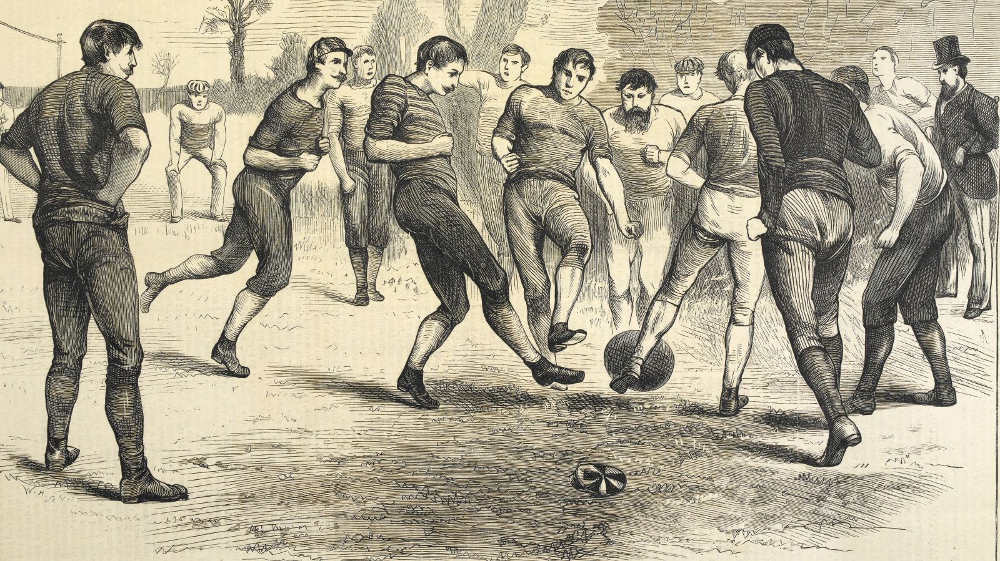

| Страница 2 |
Как появился футбол?
Футбол появился в России в 1880 году, благодаря иностранным морякам и рабочим, трудившимся на наших заводах.
Игра буквально заразила страну и стала одним из самых популярных видов спорта. Считается, что первый футбольный матч состоялся в 1897 году.
Сражались команды «Спорт» и «Василеостровское сообщество футболистов».  |